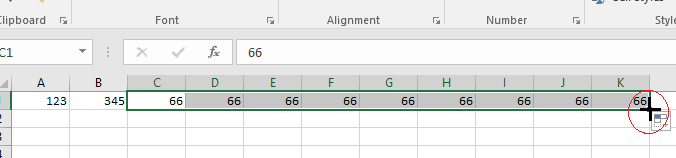

Documente Excel
Fişa Nr.1
Formatarea paginii
Microsoft Excel este un program de calcul tabelar.Actuala versiune disponibilă este Microsoft Excel 365 — pentru Windows — şi Microsoft Excel 2016 — pentru Mac OS.
Celula reprezintă componenta fundamentală a unei foi de calcul în Excel.O celulă în Excel este alcătuită din mai multe componente importante, cum ar fi:
- Adresa celulei: reprezintă identificatorul unic al unei celule și este format din litera corespunzătoare coloanei și numărul rândului.
- Conținutul celulei: poate fi un număr, text, o formulă sau o funcție.
- Formatul celulei: determină modul în care conținutul este afișat, cum ar fi formatul valutar, formatul dată sau formatul text.
- Stilurile celulei: includ proprietăți cum ar fi fontul, culoarea de fundal, alinierea și bordurile.
- Valorile celulelor dependente: dacă o celulă conține o formulă, aceasta poate folosi valorile celulelor dependente pentru a calcula rezultatul.
1. Deschiderea aplicaţiei Microsoft Excel
Start → Programs → Microsoft Office → Microsoft Excel
sau dublu clic pe pictograma de pe desktop.
2. Închiderea aplicaţiei
Fişier(File) → Ieşire(Close) sau clic pe butonul X din fereastra deschisă (dreapta sus)
3. Crearea unui document nou pornind de la un şablon gol
Clic pe File → clic pe New → clic
4. Modificarea sau setarea marginilor de pagină
În fila Aspect pagină (Page Layout) faceţi clic pe Margini (Margins) şi din listă puteţi alege un
tip de margine (Normal, Wide, etc) sau Margini particularizate… (custom Margins…
5. Modificarea sau setarea orientării întregului document.
În fila Aspect pagină (Page Layout)  → Clic pe Orientare(Orientation) → Alegem Portret(Portrait) sau Vedere(Landscape)
→ Clic pe Orientare(Orientation) → Alegem Portret(Portrait) sau Vedere(Landscape)
6. Setarea mărimi documentului
În fila Aspect pagină (Page Layout) → Mărime(Size) → Se alege o mărime din listă sau More Paper Sizes..
→ Mărime(Size) → Se alege o mărime din listă sau More Paper Sizes..
7. Mărirea sau micşorarea rapidă a unui document
Pe bara de stare găsiţi glisorul Panoramare. Glisaţi la setarea procentuală dorită
8. Inserarea aceluiaşi antet şi a aceluiaşi subsol într-un document
În fila Aspect pagină (Page Layout)
în grupul Setare Pagină(Page Setup) → Click pe săgeata dreapta jos, apare Page Setup

→ Click pe Antet/Subsol(Header/Footer)

→ Click pe proiectul de antet sau subsol dorit .
9. Inserarea textelor sau reprezentărilor grafice într-un antet sau subsol şi salvarea acestora în galerie
În fila Aspect pagină (Page Layout)
în grupul Setare Pagină(Page Setup) → Click pe săgeata dreapta jos, apare Page Setup
→ Click pe Antet/Subsol(Header/Footer) → Click pe Antet Personalizat(Custom Header)

→ Inseraţi textul sau reprezentarea grafică în
secţiunile din stânga, centru şi dreapta.
Formatarea imaginilor se poate face:

Pentru a pune în aplicare noile setări, apasă butonul OK.
10. Redenumirea unei foi de lucru
- În bara Selectori foi, faceţi clic cu butonul din dreapta pe selectorul foii pe care doriţi să o redenumiţi, apoi clic pe Redenumire(Rename)
;
- Selectaţi numele curent, apoi tastaţi numele nou.
11. Introducerea numerelor sau a textului în celule.
- În foaia de lucru, faceţi clic pe o celulă ;
- Tastaţi numerele sau textul dorit, apoi tastaţi ENTER sau TAB.
Pentru a introduce date în aceiaşi celulă dar pe un rând nou se apasă ALT+ENTER.
12. Modificarea lăţimii coloanei şi înălţimii liniei.
- Selectaţi celula → Pagina de pornire (Home) → grupul Celule (Cells) → Clic pe Formatare(Format) → Dimensiune celulă (Cell Size) → opţiunea Lăţime coloană (Column Width..) dă posibilitatea introducerii valorii de la tastatură, iar opţiunea Autofit Column Width potriveşte automat lăţimea coloanei la lungimea conţinutului:

- La fel se procedează şi pentru Înălţimea liniei(Row Height) .
13. Introducerea simultană a aceloraşi date în celule diferite.
- Dacă celulele sunt alăturate:
Se selectează prima celulă → Se introduc datele dorite în celulă → Se poziţionează pointerul
mouse-ului în colţul dreapta jos până când pointerul se transformă într-o cruce neagră +
→ se apasă butonul stâng şi cu el ţinut apăsat se umple şi celelalte celule:

- Dacă celulele nu sunt alăturate(pe sărite):
Se selectează pe rând celulele dorite (ţinând apăsată tasta CTRL) → Se tastează valoarea dorită în ultima celula activă → CTRL + Enter şi valoarea tastată apare în toate celulele selectate:
14. APLICAŢIE:
- Lansaţi aplicaţia Microsoft Office Excel;
- Să se creeze documentul clasa10 pornind de la un şablon gol;
- Să se schimbe orientarea paginii la Vedere(Landscape);
- Scrieţi în prima celulă numărul 13579 să copiaţi acest număr în toate coloanele de la A la M pe primele 34 de linii;
- Scrieţi în zig-zag, de la linia 35 până la linia 104, numărul 24680, ca în modelul de mai jos:
- Să se modifice marginile paginilor folosind setarea implicită Narrow;
- Să se modifice mărimea paginilor la A4;
- Să se modifice lăţimea coloanelor la 10 şi înălţimea liniilor la 20;
- Să se insereze un antet care să conţină textul "LICEUL NATIONAL DE INFORMATICA" în secţiunea din stânga, numele şi prenumele în secţiunea din centru şi sigla liceului în secţiunea din dreapta. Imaginea să aibă 2,5 cm înălţime;
- Să se insereze un subsol care să conţină în secţiunea din stânga numărul de pagină, în secţiunea din centru data şi în secţiunea din dreapta ora realizării documentului;
- Salvaţi documentul realizat.